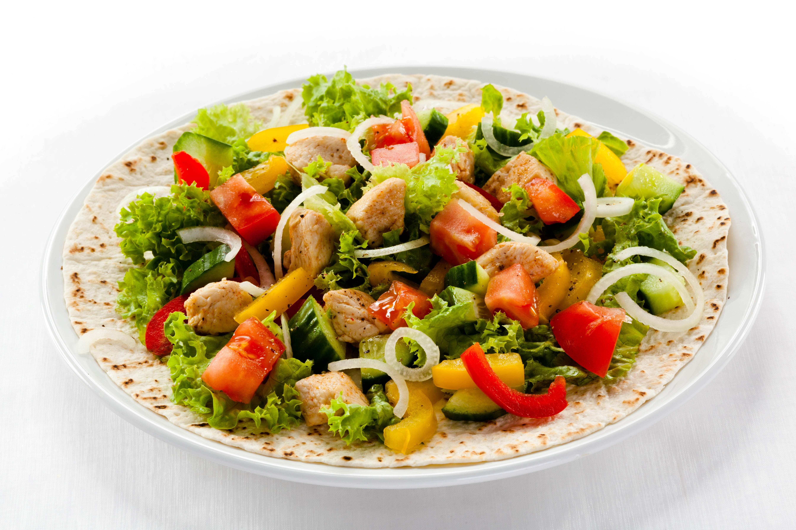

BENEFITS OF VEGETABLE SALAD
Aside from their natural good taste and great crunchy texture alongside wonderful colors and fragrances,eating alarge serving of fresh,raw vegetables each day can have significant health benefits
STEPS TO MAKE VEGETABLE SALAD
- Take a large and clear glass bowl .
- try adding blanched,lightly steamed or roasted veggieslike broccoli,french beans,cauliflower,baby corn.
- Add lentils,beans or chickpeas or bean sprouts for more protein.
- Grate some of the vegetables for a different texture.
- Add marinated veggies like artichoke hearts for tang, or other veggies like radish for pure pungency.
- Swap in your own favourite combination of dried fruits,nuts and seeds.
- use fresh coriander or chives instead of parsley